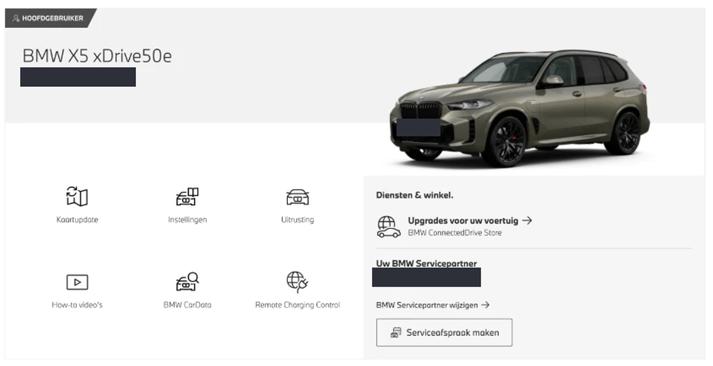
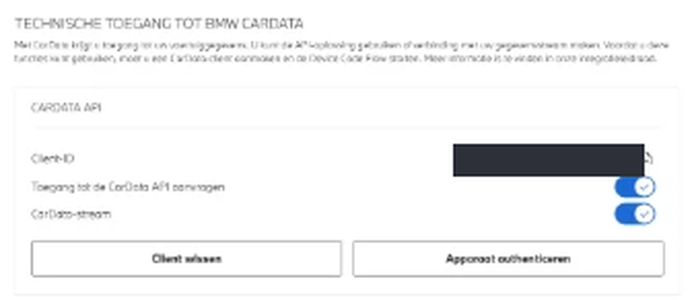

About three minutes in BMW's portal, then one approval in your browser. You never type your BMW password into this app — it never sees it.
You need a My BMW account where you are the primary user of the car. A secondary user cannot set up a stream. CarData streaming is currently EU-only.
Sign in at bmw.<your country> → account menu → Vehicle overview. Under your car, open BMW CarData and accept the terms.
Accepting also commits you to terms changes coming into force over the following six weeks.

Click Create CarData client. The portal shows a Client ID — a UUID. Copy it; you will paste it into the app in step 5.
It identifies the app, not you. Authorisation happens separately, on BMW's own site.
On the same page, enable:
Miss the stream toggle and everything still looks fine: sign-in succeeds, tokens are issued, and then MQTT rejects the connection with nothing useful in the error. If you get authorised but never receive a message, come back and check this.

Click Configure data stream, tick the attributes you want, then Submit and start stream. Ticking everything is fine.
The stream is configured per VIN. A second car stays silent until you do this for it too.
Of 245 streamable attributes selected on my X5, about 75 have ever arrived. Position updates depend on the car: Live Cockpit Professional reports every few minutes while driving, Live Cockpit Plus only at the start and end of a trip. There is no setting for this — it is what BMW sends.
In the menu bar, choose Set up / re-authorise…, paste the Client ID, and click Authorise. A browser opens at BMW's device-link page with a short code already on your clipboard. Sign in there, paste the code, approve.
.venv/bin/python -m bmwcd auth # the same thing from a terminalThat is a different flow. The app runs the device step itself — the only thing you do in the browser is sign in and approve the code.
The menu bar icon turns green once the stream is connected and the car has said something recently. Green means connected and delivering, not merely "the process is running" — that distinction is the whole reason the indicator exists.
Nothing arrives while the car is asleep. Unlock it, or drive, and messages start landing within a minute or two.
BMW's refresh token lasts about two weeks and rotates on every use. If the
stream goes red with needs_auth, run
Set up / re-authorise… again — the Client ID stays the same,
so it is one approval and nothing else.